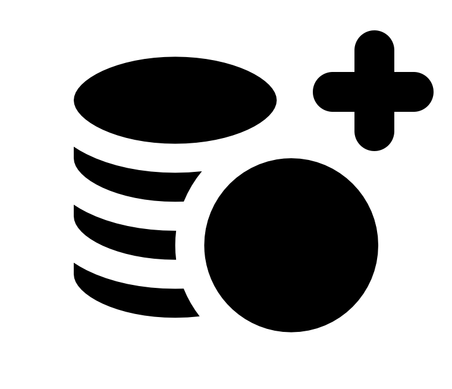
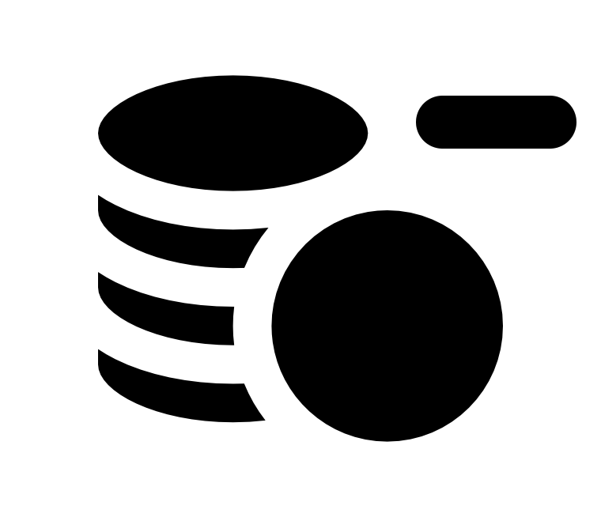
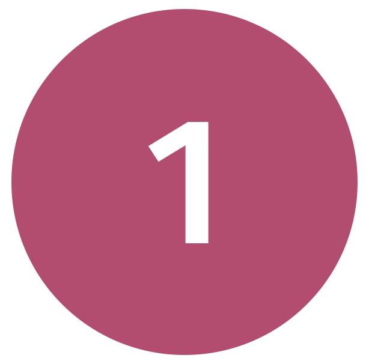
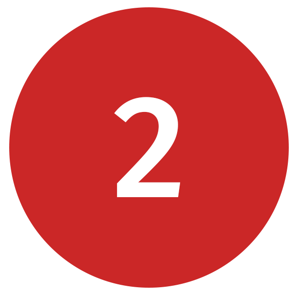
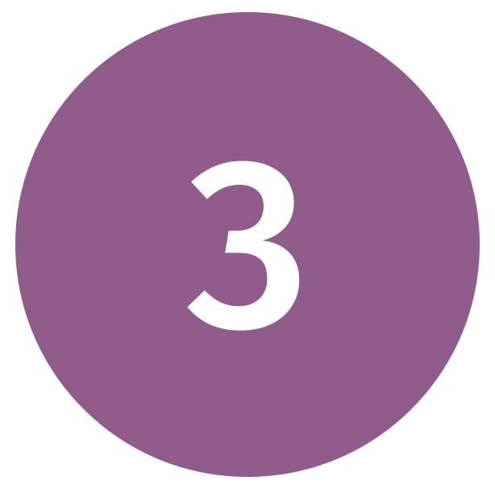
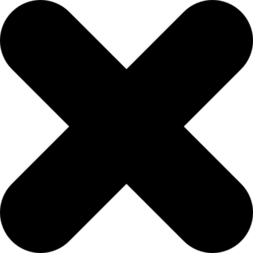

Тестовое задание на вакансию Game Designer.
Niceplay Games
Разработка Steam-игры «Potion Craft»
 Общие задания
Общие задания

Задания по Potion Craft
2.4 Новая игровая механика
Переработка диалоговой системы
Часть I. Торговые диалогиИз предлагаемого мной в вопросе ранее персонажа можно понять, что между ним и алхимиком подразумевается продолжительный разговор с возможностью выбора. Нынешняя диалоговая система не позволяет реализовать подобное. Она предполагает лишь единичное окно взаимодействия с клиентом в целях продажи или покупки.
 Зачем нужны затяжные разговоры с клиентами?
Зачем нужны затяжные разговоры с клиентами?
Если из «Papers, Please» убрать весь его сюжет и нарратив — игра превратится в рутиное занятие. Почти любому симулятору нужна дополнительная цель, что будет удерживать игрока, поддерживая уровень его заинтересованности. Постоянно возникающие интересные диалоги способны развлекать игрока, пока он занят чем-то монотонным и однообразным. Получается, в момент когда разнообразие геймплея не будет развиваться — будет развиваться сюжет.
Какими должны быть диалоги?
В первую очередь диалоги должны иметь практическую значимость для игрока, в таком случае они не будут скипаться. Игрок с большей вероятностью не станет пропускать диалог, который способен повлиять на дальнейшие события в игре. Влияние на игру может варьироваться — быть как глобальным, так и ситуационным.
Я предлагаю ввести в игру следующие три вида диалогов: торговый, сюжетный и информационный:
 Торговый
Торговый
Это ситуационный диалог, он будет оказывать влияние непосредственно на конкретного клиента. Ведя его правильно, игрок будет получать расположение клиента, а возможно и чаевые. Вдобавок такие диалоги будут повышать количество приходящих клиентов в день по той причине, что их будет устраивать обслуживание и полученный товар. Либо игрок будет лишаться клиентов, если он ведёт себя в разговоре с ними пренебрежительно.
 Сюжетный
Сюжетный
Это диалоги с клиентами, которые приводят к различного рода событиям. Они могут также содержать в себе описанные функции торгового диалога, но всё же их основная цель привести к какому-то сюжетному повороту. В основном эти диалоги будут вести сюжетные персонажи с фиксированной внешностью (например, тот же Эдью), но иногда это может оказаться и скрипт диалога на рандомном клиенте подходящем по типу (маг, воин и т.д.).
Но чтобы рассказывать историю, нам нужно то, через что она будет рассказываться. А значит нам необходимы нарративные объекты:
Газета с городскими событиями, на которые каким-то образом мог повлиять главный герой своими действиями
Письма, которые являются способом общения на расстоянии между персонажами в игровом мире
Питомец-компаньон, что доставляет эти письма, а также после своих полётов рассказывает интересные истории происходящие в городе и может влиять на истории тех людей, что уже не посещают лавку
 Информационный
Информационный
Диалоги, что не подразумевают продажу зелья, а ведутся с целью передачи игроку новой информации об игровом мире и происходящих в нём явлениях. Этот тип диалога игрок чаще всего ведёт со своим питомцем-филином обсуждая события по ходу игры, но иногда он вступает в него и с другими персонажами. Отличается от других большей линейностью, так как сам диалог имитирует обыкновенные разговоры, где выбор реплик влияет на смену тона и темы.
Как это реализовать?
В первую очередь такие диалоги становятся гораздо более живыми: «эффект жизни» в диалоге создаётся проработкой характера и настроения каждого клиента. Блоки с фразами обязательно имеют меньше текста, чтобы игрок иллюзорно воспринимал его как разговор, а не как записки на экране. А также мы задействуем нехитрый приём — анимацию:
Растягивая появление символов во времени, мы создаём ощущение реального общения, ведь в нём любая фраза не говорится моментально. Идеально добиваться такого эффекта именно за счёт регулирования скорости возникновения символов: как можно заметить первая часть фразы появляется намного медленнее второй, демонстрируя момент задумчивости у собеседника.
Это незначительное изменение в визуальном плане, но самая важная часть изменений касается технической стороны.
Новая система делает диалоги более объёмными и многообразными. Система реагирует на выбор игрока и дарит уникальный игровой опыт общения и множество интересных историй. Лучше всего продемонстрирует как это устроено конкретный пример торгового диалога:
К нам в лавку заходит клиент, который внешним видом показывает, что он маг. Предположим, он носит мантию или шляпу мага. После чего между главным героем и ним начинается разговор:
В начале диалога с клиентом игрок волен выбирать путь движения. В первую очередь поощряется вежливость к клиенту, следуя таким путём, игрок в большинстве случаев будет оказываться в выгоде. Реплики выше меняют отношение клиента к сделке, при хорошем же отношении тот может оставить чаевые после покупки и начать посещать лавку регулярно.
Но сначала сделаем важную ремарку и поговорим о том, на чём строится новая диалоговая система:
Базис диалоговой системы
Успешность сделки изображается этим значком —  . Это счётчик, что меняется по ходу разговора с клиентом в зависимости от действий игрока:
. Это счётчик, что меняется по ходу разговора с клиентом в зависимости от действий игрока:
 — Игрок ведёт себя вежливо и увеличивает вероятность, что клиент оставит чаевые и придёт повторно.
 — Игрок ведёт себя пренебрежительно и увеличивает вероятность, что клиент не оставит чаевых и не придёт повторно.
Таких значков как  будет применятся множество в новой диалоговой системе. Они позволяют кратко описать последствия выбора реплики. Большая часть из них
скрыта от игрока при разговоре, другие же появляются на мгновенье после выбора, а некоторые показываются изначально, заставляя игрока делать более обдуманный выбор.
будет применятся множество в новой диалоговой системе. Они позволяют кратко описать последствия выбора реплики. Большая часть из них
скрыта от игрока при разговоре, другие же появляются на мгновенье после выбора, а некоторые показываются изначально, заставляя игрока делать более обдуманный выбор.
Чаевые
Каждый из набранных  увеличивает вероятность чаевых на 5%. Клиент оставляет чаевые в конце сделки, если та прошла успешно. Сделка
окончилась успешно если клиент каким либо образом таки получил зелье (бывают исключения). Сумма чаевых составляет определённый процент от продажи.
увеличивает вероятность чаевых на 5%. Клиент оставляет чаевые в конце сделки, если та прошла успешно. Сделка
окончилась успешно если клиент каким либо образом таки получил зелье (бывают исключения). Сумма чаевых составляет определённый процент от продажи.
Постоянные клиенты
Постоянный клиент — это тот клиент, который после правильно выстроенного первого диалога стал ходить в лавку на регулярной основе с определённой частотой. На
частоту прихода может влиять качество и ценность обычно покупаемого им зелья, особенности самого клиента и другие факторы.
Один из способов сделать клиента постоянным с определённым шансом после завершения сделки — набрать большее количество очков  . Требуемое количество уникально
для каждого диалога. Например, в разговоре с этим магом тот начнёт ходить регулярно с шансом в 75%, если игрок под конец набрал 2
. Требуемое количество уникально
для каждого диалога. Например, в разговоре с этим магом тот начнёт ходить регулярно с шансом в 75%, если игрок под конец набрал 2 . И с шансом в 50%,
если игрок набрал 1
. И с шансом в 50%,
если игрок набрал 1 .
.
Большая часть постоянных клиентов имеет установленный лимит приходов. Это сделано с целью, чтобы игрок старался набирать новых постоянных клиентов и имел возможность потерять ненужных ему клиентов, не тратя на это общую репутацию магазина. Какие именно клиенты для игрока могут оказаться ненужными, станет понятно, когда мы дойдём до гильдий.
Общая репутация магазина
Игрок может относиться к клиентам небрежно: не продавать им зелья, злить их и терять на этой почве постоянных клиентов. При таком отношении общая репутация его магазина будет понижаться. Её же повышение происходит от обретения любых новых постоянных клиентов и их успешного обслуживания.
Сам показатель репутации сказывается на следующих важных игровых аспектах:
1Чем больше репутация, тем больше цены способен устанавливать игрок на свои товары
2От репутации зависит количество приходящих в лавку новых клиентов (не влияет на постоянных клиентов)
3Пониженная репутация создаёт проблемы с законом из-за повышенных налогов
Общая репутация магазина — это корень диалоговой системы и основной мотиватор игрока. Она провоцирует его балансировать между его игровыми желаниями чтобы оставаться на плаву.
В игре будет существовать конкретная планка требуемой от игрока репутации, причём сама эта планка по ходу игры будет постоянно возрастать. Игрок, который слишком долго будет задерживаться под этой планкой, закончит игру банкротом.
Посмотрим, к чему приведёт выбор из трёх реплик выше:
 Кликните для увеличения
Кликните для увеличенияВыбирая реплику с ноткой негатива, игрок попадает на отрицательный путь (что выше), в случае же иного выбора — на положительный (что ниже). Игрок может продолжать двигаться по изначально выбранному пути, но у системы, в свою очередь, есть принцип предлагать возможность свернуть с него определённой репликой. В данном случае переходом с отрицательного пути на положительный служит реплика — "Ладно, неважно, сейчас принесу одно", в противоположном случае — "А вы пробовали жёванное сено?".
Рассмотрим новые значки:
— подразумевает, что эта реплика содержит в себе ложь. Один из тех значков, что видны игроку во время выбора. Видимость этого значка необходима, чтобы игрок различал ложь главного героя от правды и осознавал вероятные негативные последствия.
 — тоже видна игроку, предупреждает игрока о риске выбора отмеченной им реплики. Обычно подразумевается рандомизация последующего блока
диалога из какого-то множества. Например, успех, провал или нейтральный исход.
— тоже видна игроку, предупреждает игрока о риске выбора отмеченной им реплики. Обычно подразумевается рандомизация последующего блока
диалога из какого-то множества. Например, успех, провал или нейтральный исход.
 — повышает репутацию Торговой гильдии. Не отображается изначально, но возникает на мгновенье после выбора связанной с ним
реплики. Есть схожие значки с плюсом и минусом у других гильдий. Соответственно, они повышают или понижают репутации у других гильдий. Иногда на этих значках можно заметить множители, что умножают получаемый или отнимаемый бонус — x2,
x3, x5.
— повышает репутацию Торговой гильдии. Не отображается изначально, но возникает на мгновенье после выбора связанной с ним
реплики. Есть схожие значки с плюсом и минусом у других гильдий. Соответственно, они повышают или понижают репутации у других гильдий. Иногда на этих значках можно заметить множители, что умножают получаемый или отнимаемый бонус — x2,
x3, x5.
О лжи
Обычно диалоговая система не поощряет ложь со стороны игрока, но и предоставляя возможность её применения даёт ощущение, что это всё же более подходящий вариант выбора. Например, солгав, игрок якобы повышает шанс покупки зелья клиентом, увеличивает репутацию какой-то гильдии и т.п. Так или иначе, завравшийся игрок встретится с противоречием своего выбора или очевидно невыгодным для него исходом.
 Подробнее о гильдиях
Подробнее о гильдиях
С целью примера и возможности отыгрыша роли в диалогах было придумано четыре гильдии, репутация которых будет менятся в зависимости от стратегии игрока в разговоре с клиентами:

Гильдия воинов
Репутация в этой гильдии у игрока повышается при успешном обслуживании воинов и от каждого постоянного клиента-воина. Соперничают с гильдией магов и поэтому репутация понижается если игрок имеет
постоянных клиентов-магов.
Особенности
⚬ Частая продажа боевых зелий
⚬ Бесплатная охрана от воров и грабителей
⚬ Значительно меньше проблем с законом
Гильдия магов
Репутация в этой гильдии повышается при успешном обслуживании магов и от каждого постоянного клиента-мага. Соперничают с гильдией воинов, и поэтому репутация понижается если игрок имеет
постоянных клиентов-войнов.
Особенности
⚬ Частая продажа зелий ориентированных на магов
⚬ Упрощённая добыча труднодоступных ингредиентов
⚬ Предугадывание игровых событий из-за магического дара

Торговая гильдия
Репутация повышается только от успешных продаж, а не от постоянных клиентов. В диалогах зачастую поощряет ложь, так как та способствует удачному завершению сделки (что конечно не особо
дальновидный подход).
Особенности
⚬ Частая продажа бытовых зелий
⚬ Выдача скидок в обход диалоговой системы
⚬ Возможность брать кредиты

Тёмная гильдия
Вступление происходит после прохождения стартового квеста Тёмной гильдии. После попадания в неё образует в вашем подвале свой штаб и поощряет стратегию отпугивания клиентов от лавки, чтобы
проворачивать свои тёмные дела без свидетелей: сокрытие трупов жертв, создание незаконных зелий, обслуживание людей в розыске и т.д. Также их врачи-специалисты будут очень признательны в случае предоставления тел ваших клиентов (живых или
мёртвых).
Особенности
⚬ Частая продажа ядов и опасных зелий
⚬ Ускоренное получение опыта и навыков из-за доступа к Древней библиотеке
⚬ Игрок получает Тёмную метку на теле, что способна
держать людей в страхе
За время игры можно выбрать только одну гильдию. Получаемая в гильдиях репутация тратится на уникальные гильдийские способности и навыки.
Разберём нижнюю часть диалога, в которой игрок ведёт себя более учтиво:
 Кликните для увеличения
Кликните для увеличенияНовый символ, значок и блок:
   — указывают на скачки между блоками диалога с той же цифрой и цветом. Сделаны не только с целью визуального устранения пересечения линий на схеме диалога, но и также потому что некоторые реплики имеют проверку: был ли выполнен скачок или обычный переход по стрелке (c целью избежания бесконечного зацикливания диалога между блоками, что ссылаются друг на друга).
— значок означающий выход из диалога и переход на окно продажи зелья.
Рандомизация — при попадании в этот блок последующее движение диалога определяется случайным образом между существующими направлениями.
Игрок встречается с выбором между репликами:
| А вы пробовали жёванное сено? | Перекинет игрока на отрицательную ветку (её мы разберём чуть позже) |
| Вкус?... Да вроде с ним всё в порядке | Является ложью, а если в этом диалоге игрок соврёт повторно, то после продажи зелья вскроется правда и клиент больше не придёт |
| Честно, я даже не знаю |
Рискована из-за привередливости клиента ко вкусу зелий и может спугнуть его, из-за чего тот не станет покупать зелье |
Выбор между ложью и правдой ставит игрока на распутье и не даёт ему однозначного ответа на вопрос "что же действительно из этого лучше?"
Начинающего игрока этот выбор заставит задуматься как о моральной стороне вопроса, так и о практической.
Опытный игрок будет предполагать риски и оценивать необходимость в регулярном приходе мага в его лавку.
Немного о влиянии диалогов на гильдии
Разберём, как же можно стать членом Гильдии магов: постоянные клиенты-маги начинают советовать вашу лавку своим друзьям-магам, а в дальнейшем даже преподаватели и знатные члены гильдии начнут рекомендовать ваш магазин в качестве лучшего в городе для покупки зелий.
Это повлечёт к сотрудничеству между гильдией и вашим вступлением в качестве главного поставщика зелий. Такое событие приведёт игрока к уникальной сюжетной ветке, связанной с гильдией.
Чтобы лучше понимать последствия выбора, рассмотрим Конечные условия в зависимости от результатов по завершению диалога:
| Конечные условия |
| Клиент станет постоянным с шансом в 75% при 2 |
| Клиент станет постоянным с шансом в 50% при 1 |
| Клиент станет постоянным с шансом в 25% при 0 |
| Клиент не придёт с шансом 100% если игрок соврал в количестве: x2 |
| Клиент станет постоянным с шансом в 90% если зелье было выдано бесплатно |
По ходу диалога двойная ложь приводит к однозначной продаже зелья и к стопроцентной потере постоянного клиента. Правда же, с шансом в 50%, может привести и к продаже, и к возможному постоянному клиенту, зависящего от шанса 75%.
Преимущества Гильдии магов. Знание игровых шансов
В конце диалога игрок не знает наверняка, станет ли клиент постоянным и с какой вероятностью это может произойти. Член же Гильдии магов имея особые способности, даваемые ею, предполагает шансы прихода словами:
- «Ни в коем случае (0%)»
- «Не стоит надеяться (1%-25%)»
- «Маловероятно (25%-50%)"
- «Может быть (50%-75%)»
- «Крайне вероятно (75%-90%)»
- «Похоже однозначно (90% - 100%)»
А развивая эту способность, игрок начинает вместо слов видеть уже точные шансы в виде цифр.
Но в случае неудачи при выборе правдивой реплики клиент начинает уходить, однако у игрока есть возможность его остановить и предложить зелье бесплатно. В системе диалогов этот жест в сторону клиента зачастую всегда расценивается положительно и позволяет сделать клиента постоянным даже с большим шансом, чем в случае продажи. Среди минусов: убыток, бесплатная раздача зелий плохо одобряют в Торговой гильдии, а также это приводит к возникновению клиентов-халявщиков.
Линия поведения
Начинающие игроки будут проявлять себя дружелюбно с теми, кто им больше симпатизирует как персонаж и негативно с теми, кто их отталкивает. После чего с интересом и удивлением наблюдать за последствиями их решений.
Опытные же игроки будут стараться вести диалог более продуманно. Например, такой игрок понимая что у него мало постоянных клиентов будет стараться прийти к варианту отдачи бесплатного зелья, т.к. тот имеет наибольший шанс, чтобы сделать клиента постоянным.
Рассмотрим отрицательную ветку диалога и заодно выясним, как напрямую прийти к выдаче бесплатного зелья. Сначала игрок встречается с последствиями своего пренебрежительного отношения с клиентом — тот начинает уходить:
 Кликните для увеличения
Кликните для увеличенияЕму можно помахать рукой и не останавливать, потеряв репутацию Гильдии магов. Это в случае, если игрок не хочет, чтобы к нему ходил маг, например, чтобы постоянно не делать зелья маны, не портить репутацию в Гильдии воинов и т.д. При ином выборе можно попытаться сгладить своё поведение извинениями. В таком случае игрок столкнётся с проверкой, насколько небрежно он повёл себя с клиентом в репликах ранее:
Условие — при попадании в этот логический блок последующее движение диалога зависит от результата условия.
В данном блоке диалога следующее условие:  =1?
=1?
В случае, если игрок только задал странный вопрос про поедание жёванного сена, то он минует тот сложный выбор с правдой и ложью и сразу попадёт в блок рандомизации. При успехе клиент станет постоянным с вероятностью в 50%, потому что количество  под конец диалога будет равно 1.
под конец диалога будет равно 1.
Если же игрок сразу ещё с первой реплики вёл себя неподобающе, то он попадёт в следующий расклад событий:
 Кликните для увеличения
Кликните для увеличенияИгрок стоит перед выбором между не совсем очевидными репликами:
| Давайте я сделаю вам скидку | Игрок всячески желает продать зелье и готов пойти на скидку. Такой подход одобряется и клиент пойдёт на это. |
| На что вы намекаете? | Игрок, видя выше реплику со скидкой, решает проигнорировать её и пытается юлить. Система диалогов подхватит его на этом и накажет за жадность тем, что ему придётся отдавать зелье бесплатно, чтобы обрести постоянного клиента. |
| Так, понятно... до свидания | Приводит к завершению разговора. Не смотря на то, что реплики такого рода будут выбираться скорее сразу, т.к. желающий отсеять клиента сделает это при первой возможности. Всё же они необходимы и в дальнейшем, чтобы подхватить возможное кратковременное эмоциональное желание у игрока распрощаться с клиентом. |
Дальнейший блок-условие  =0? проверяет именно на выбор между этими двумя репликами, потому
=0? проверяет именно на выбор между этими двумя репликами, потому  будет равно 0 только в случае выбора реплики со скидкой.
будет равно 0 только в случае выбора реплики со скидкой.
 Как работает определение скидки?
Как работает определение скидки?
Попадая на окно определения скидки, игрок за проценты от продажи приобретает  , что были не получены за диалог. За каждые 10% от цены он будет получать 1
, что были не получены за диалог. За каждые 10% от цены он будет получать 1
 , пока не достигнет потолка, а именно, в этом диалоге, это 2
, пока не достигнет потолка, а именно, в этом диалоге, это 2  . Таким
образом, он покупает шансы на то, чтобы клиент с большей вероятностью стал постоянным.
. Таким
образом, он покупает шансы на то, чтобы клиент с большей вероятностью стал постоянным.
Как происходит отдача зелья бесплатно? И почему вероятность прихода клиента выше в этом случае?
Отдача бесплатного зелья проходит, как и продажа. Следует поместить необходимое клиенту зелье на весы. Это лишь не будет приносить прибыли. Повышенная вероятность прихода клиента же объясняется необычностью явления отдачи чего-то бесплатного в магазине, это запоминается и заседает в голове. Как правило это оставляет приятное впечатление и человек может захотеть спустя время прийти снова из-за ощущения долга перед продавцом.
Преимущества Торговой гильдии. Упрощённая выдача скидок
Торговая гильдия даёт возможность предлагать клиентам скидки на зелья в обход диалоговой системы. Таким образом с большей вероятностью обретать постоянных клиентов не рискуя в разговорах.
Лимитно ограниченная способность и работает только в торговых диалогах. При злоупотреблении, приводит к тому, что большинство приходящих постоянных клиентов начинают выпрашивать скидку (тоже самое происходит при злоупотреблении выдачи скидок через диалоги).
Особые возможности гильдий. Бесплатные зелья для членов гильдии
После вступления в какую-либо гильдию игрок получает возможность быстрой выдачи бесплатных зелий её членам. Например, Гильдия магов даст возможность выдавать зелья бесплатно приходящим в лавку магам, намного быстрее создавая большое количество клиентов-магов посещающих лавку и форсируя получение репутации в гильдии.
Лимитно ограниченная способность и работает только в торговых диалогах. При злоупотреблении постоянные клиенты привыкают к бесплатным зельям и перестают их оплачивать: начинают их брать без спроса и удивляться тому, почему в этот раз они должны платить (то же самое происходит при злоупотреблении выдачи бесплатных зелий через диалоги).
Что же происходит, когда разговор с клиентом завершается по тем или иным причинам? Зависит от исхода диалога, конкретно в этом есть несколько вариантов:
- Клиент ушёл по ходу диалога
- Была совершена передача зелья
- Клиент купил зелье обманутым
1 Клиент ушёл по ходу диалога
Если маг ушёл по ходу диалога, то он просто исчезает из поля зрения и лавку больше не посетит. В торговых диалогах так происходит зачастую, с некоторыми исключениями. Всё же часть торговых диалогов способна вызывать определённую череду событий после ухода, например, лавку может посетить кто-то связанный с ними (подобный пример будет рассмотрен позже).
2 Была совершена передача зелья (продажа, скидка, отдача)
В этом случае, как и было расписано ранее, маг может оставить чаевые, шанс которых зависит от набранных  , от них же зависит шанс становления постоянным
клиентом:
, от них же зависит шанс становления постоянным
клиентом:
| Клиент станет постоянным с шансом в 75% при 2 |
| Клиент станет постоянным с шансом в 50% при 1 |
| Клиент станет постоянным с шансом в 25% при 0 |
За исключением если зелье было отдано бесплатно, в таком случае шанс фиксированный — 90%.
Если шанс сработает не в пользу игрока и маг не станет постоянным клиентом, то он как и первом случае больше не придёт в лавку. В случае же если маг станет им, то он придёт повторно через несколько дней с новым коротким диалогом:
 Кликните для увеличения
Кликните для увеличенияТакой диалог произойдёт единожды, после чего клиент будет приходить со стандартными фразами, наподобие "Добрый день, я за зельем маны". Иногда он будет покупать иные зелья, что обычно берут другие маги.
3 Клиент купил зелье будучи обманутым
Это уникальный исход диалога, при котором клиент также как и в первом случае больше не посетит алхимическую лавку, хоть и может предварительно оставить чаевые. Отличие лишь в том, что здесь задействуется один из нарративных объектов, что был упомянут ранее:
Питомец-филин
Это питомец-компаньон, задача которого скрасить одиночество нашего алхимика томными вечерами. Он привнесёт ощущение жизни в мастерскую лавки, а также будет выступать в качестве почтальона, интересного собеседника и рассказчика сюжетных историй: развивать их до логического конца, давая игроку узнавать последствия его решений.
«Филя» — волшебный питомец не только потому что обладает даром речи, но и потому что будучи филином бодрствует в дневное время суток. В игре он выступает в качестве интерактивного объекта, а взаимодействие с ним доступно перед посещением клиентов в начале дня, то есть утром; и после того, как лавку посетил последний клиент, то есть вечером.
Утро
Филин и игрок разговаривают о событиях происходящих в мире: игрок читает газету и после клика на конкретную новость, алхимик и Филя обсуждают её путём ведения информационного диалога. Также, в дальнейшем, по утрам игрок будет инициировать развитие историй вне главного сюжета говоря о том куда лететь филину, чтобы выяснить какую-либо информацию, то есть развить определенную историю. После окончания утра, Филя доставляет написанные игроком письма адресатам.
Вечер
Прилетая домой к вечеру после обслуживания игроком последнего клиента, филин кладёт письма присланные другими персонажами на стол алхимика. Читая их, игрок иногда получает комментарии про них от Фили в виде всплывающих сообщений. При обычном взаимодействии вечером, Филя рассказывает то, что видел по ходу дня во время своих полётов по городу. Эти рассказы: жизнь клиентов вне лавки, сюжетные повороты и городские события.
Дополнительные возможности
Иногда после полётов, помимо писем от других персонажей, он приносит с собой интересные предметы. В случае отсутствия каких-то историй или поводов для разговоров филин говорит различные забавные фразы. Также в начале игры он может выступать в качестве обучающего наставника.
Нажав на филина, тот вступит с игроком в следующий диалог:
 Кликните для увеличения
Кликните для увеличенияПосле чего на этом эта короткая история с магом завершится.
Цели диалога
Хоть и в большинстве торговых диалогов целью игрока будет продажа зелья, однако это может быть далеко не единственный приоритет. За счёт гибкого подхода в диалоговой системе игрок волен придерживаться иной стратегии.


Гильдии с их особенностями вынуждают игрока ради зарабатывания репутации делать нестандартные действия: например, умышленно прогонять некоторых клиентов, вести себя с ними неподобающе и обманывать. Самой нестандартной стратегией игры обладает именно Тёмная гильдия, что провоцирует игрока на совершенно противоправные действия.
Начинающие игроки зачастую отыгрывают «хороших парней» и играя более стандартными методами будут попадать в Гильдии магов или воинов.
Опытные игроки, уже побывав в роли хороших, захотят узнать другую сторону медали и побыть плохишами, так они испробуют более уникальный геймплей играя через Торговую или Тёмную гильдию.

 Гейм-дизайн
Гейм-дизайн Игровая система: Диалоговая система для симулятора
алхимика
Игровая система: Диалоговая система для симулятора
алхимика Тестовое задание на Level
Designer Match-3
Тестовое задание на Level
Designer Match-3 Статья: «Mirror’s Edge, или как
гениальная идея для игры превратилась в её первостепенную проблему»
Статья: «Mirror’s Edge, или как
гениальная идея для игры превратилась в её первостепенную проблему» Таблица Google Sheets: Простая
система повышения уровня в CRPG
Таблица Google Sheets: Простая
система повышения уровня в CRPG UX/UI: Документ по улучшению интерфейса для Dark Bestiary
UX/UI: Документ по улучшению интерфейса для Dark Bestiary Задачи на теорию вероятностей
Задачи на теорию вероятностей Питч документ Multiplayer Poker Game
Питч документ Multiplayer Poker Game Тестовое задание в компанию Z-Media
Тестовое задание в компанию Z-Media Нарратив-дизайн
Нарратив-дизайн Пример: Персонаж для
симулятора алхимика
Пример: Персонаж для
симулятора алхимика Текст:
Короткие описания предметов и игровых
объектов
Текст:
Короткие описания предметов и игровых
объектов Художественный рассказ: История о девочке, что хотела стать пиратом
Художественный рассказ: История о девочке, что хотела стать пиратом